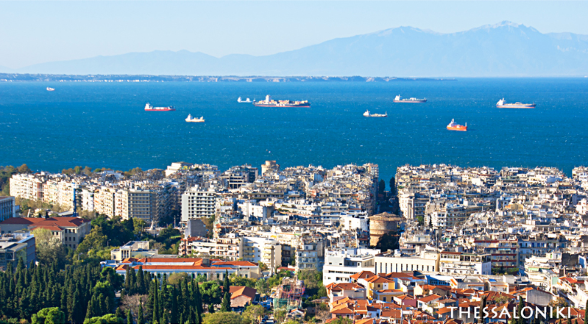
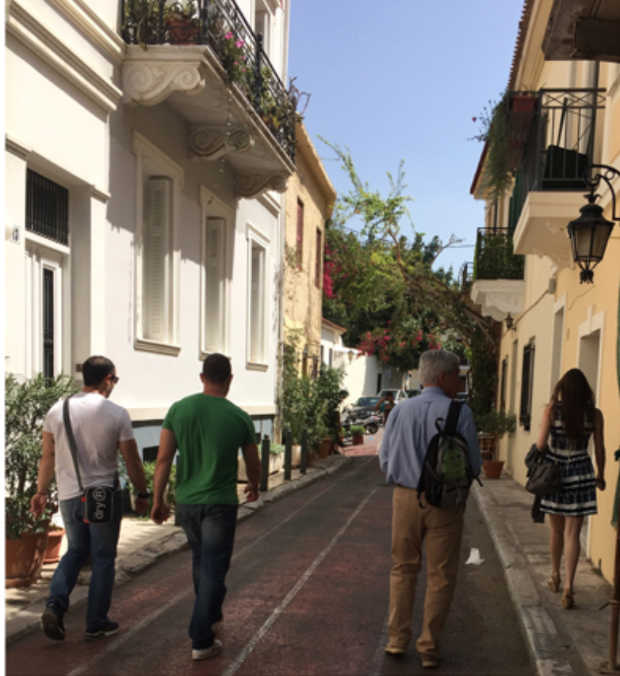
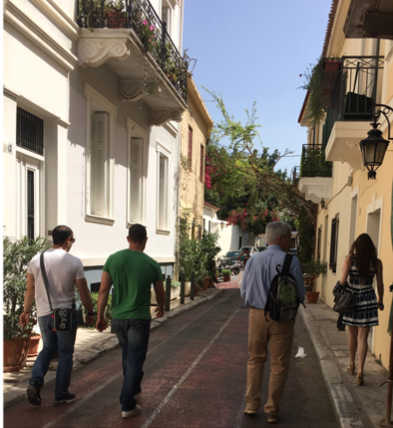

goodness
goodnessHome> Events
GREECE CULINARIA 2016
NOVEMBER 05, 2016 TO NOVEMBER 13, 2016
GREECE
OLDWAYS, CHEF ANA SORTUN AND MUSEUM CURATOR RONNI BAERIN GREECE • NOVEMBER 5–13, 2016
Oldways, James Beard award-winning chef Ana Sortun (left) of Oleana, Sofra and Sarma, and museum curator Ronni Baer (right) led an 8-day culinary and cultural tour in Greece.
We spent several days in the northern city of Thessaloniki, and then traveled south to Athens. There, we explored the restaurant scene and food markets and, of course, visited the Acropolis and its world-class museum, along with other cultural sites of interest and note. In the middle of our stay in Athens, we took a short ferry trip to the island of Kea and the cooking school of our friend, journalist, cookbook author, and teacher, Aglaia Kremezi.
Day 1: Kalós orísate!
Arrived at the Electra Palace Thessaloniki. Walked around Aristotelous Square, visited the Modiano Market and Ladadika district, and the Aegean waterfront. Wine tasting with Lambros Papadimitriou from the Kir Yianni Winery, who talked about the wines of the Naoussa and Amyndeon regions, and then lead us in a tasting of five wines from Kir Yianni, owned by Yiannis Boutari, a leading winemaker in Greece, and also the mayor of Thessaloniki. Traditional dinner at the Palace Thessaloniki’s rooftop restaurant with a spectacular view of the Aegean and Mt. Olympus.
Day 2: Thessaloniki—Wine and Traditional Food
Traveled southeast to visit the beautiful Gerovassiliou winery, owned by Vangelis Gerovassiliou, an innovative winemaker, who with his collection of more than 3,000 corkscrews as the centerpiece, has also created an historical wine museum. Then a visit to the Women’s Agricultural Cooperative of St. Anthony for a demonstration and tasting of traditional dishes by the women there. A short drive to the Perek’s family restaurant for a traditional country lunch in the mountains. Dinner at Agioli, a restaurant along the sea, for a family-style dinner featuring an innovative take on Greek cuisine.
Day 3: Farming & Cooking
A morning walking tour of Thessaloniki’s Modiano and Kapani markets, a few blocks from our hotel. Visit to the American Farm School for a tour, several tastings (olive oil and tsipouro produced in the campus winery from grapes grown in the campus vineyard) and a talk on other agricultural products at the AFS. At the end of the tour was Ana’s first cooking demonstration, followed by a lunch of the dishes she made. Return to Thessaloniki and dinner close to the hotel at Palati, a restaurant in the old Egyptian market area, known as Ladadika, for a classic taverna dinner, accompanied by traditional Greek music.
Day 4: Explorations—Art & Food
Visit to two of Thessaloniki’s world-class museums: Thessaloniki’s Archaelogical Museum, including a presentation by European Art Curator Ronni Baer, and the Byzantine Museum for a guided tour and light lunch in the museum’s café. Flight to Athens and an orientation tour of Athens by bus. “Night stroll” for a food-focused walk with tastings of food and wine of Athens. After the stroll, free time to venture out for dinner.
Day 5: Athens Classics
Half of the group visited the Athens Central Market, including a food walking tour of Athens. The other half enjoyed a visit to the Acropolis and the spectacular Acropolis Museum. To dinner for multi-course meze at Eleas Gi, a restaurant where Ana had one of her most memorable dining experiences.
Day 6: Athens Classics Redux
Visit to the Acropolis and Acropolis Museum and food walking tour of Athens, reversing the groups of Wednesday. Free time in the afternoon. Walk to an early dinner at Café Avissinia, a classic taverna near the famous flea market in Monastiraki Square.
Day7: An Island Day
Travel by ferry to the island of Kea. Arrive at Aglaia Kremezi’s cooking school—Kea Artisanal—for a tour of Aglaia and Costas’ garden and a cooking lesson with Aglaia and Ana, followed by lunch of the dishes they prepared. Late afternoon ferry back to Athens. Free evening.
Day 8: Options!
All Day Special Tours — participants attend their choice of tours:
Guided Museum and Art Tour with Lunch: Ronni Baer and guide, Kelly Bourni, led the group through the Benaki and Byzantine Museums. Ronni’s presentation focused on the painting by El Greco at the Benaki Museum. The tour concluded with lunch.
 

Cooking Class, including Lunch: A hands-on cooking class at Restaurant 2 Mazi, very close to the hotel. The group made five dishes, and then settled in for a lunch of their own making!
Ceramics Class: This three-hour class was an introduction to traditional ceramic art with a well-known Athenian potter, Antonis Palles. Students learned the old methods of producing simple clay utility or decorative objects. After the class, a classic taverna lunch.
Shopping Tour on Your Own
Gala dinner at the Rooftop Garden Restaurant of the Electra Palace Hotel, with a spectacular nighttime view of the Acropolis.
Day 8: Yassas!
Departures or touring on your own!
PHOTO GALLERY
Click on any of the images in this gallery to enlarge them. If you download them for your own use or if you are a media professional, publisher, or educator please be sure to credit our photographs accordingly in your story or materials. Credit line should be “Courtesy of Oldways, oldwayspt.org”.
GREECE CULINARIA 2016
Olways
266 Beacon Street Suite 1
Boston , MA 02116
TEL 617-421-5500
FAX 617-421-5511
info@oldwaysspt.org